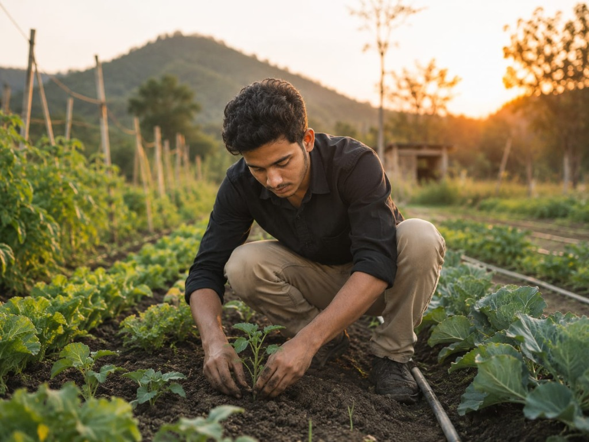

120 Acres of Living, Breathing Organic Soil
Located in the unpolluted foothills of the Green Valley belt, Arif Organic Farm benefits from rich alluvial topsoil, natural mountain stream aquifers, and abundant sunlight.
We operate as a complete closed-loop agro-ecosystem. Our indigenous dairy cows provide rich dung and urine for traditional bio-formulations like Jeevamrutha, while crop residues are returned directly to the earth as nourishing mulch.

& Natural Inputs
From Seed to Harvest: Our 7-Stage Process
Every fruit and vegetable that leaves our farm follows a rigorous, science-backed organic lifecycle designed for uncompromised nutrition and taste.
Soil Enrichment & Bio-Compost
Before sowing, beds are infused with aged vermicompost, cow dung manure, and liquid Jeevamrutha to awaken millions of beneficial soil microbes.
Indigenous Heirloom Seeds
We exclusively select traditional open-pollinated, non-hybrid seeds preserved by organic seed keepers for high flavor and disease resistance.
Companion Planting
We plant marigolds, basil, and lemongrass alongside crops. Their natural aromas repel harmful insects while welcoming ladybugs and bees.
Solar Precision Drip Irrigation
Clean solar-powered pumps deliver filtered rainwater right to root zones, preventing fungal leaf blight and conserving precious groundwater.
Handpicked Dawn Harvest
Trained harvesters hand-pick produce between 5:00 AM and 8:00 AM when sugar and nutrient concentrations in crops are at their daily peak.
Zero-Plastic Eco Packaging
Produce is gently sorted, wiped with clean spring water, and packed in breathable jute, banana fiber, and recycled paper bags.
Organic Composting & Cycle
All harvest trimmings and green waste return to our aerobic compost windrows, renewing the soil nutrient bank for the next crop rotation.

Biodiversity
Living Earth: The Secret to True Flavor
In conventional farming, soil is treated merely as dead matter that physically holds roots while synthetic chemicals are force-fed. At Arif Organic Farm, we recognize that healthy soil is a thriving metropolis of billions of fungi, bacteria, and earthworms.
These microorganisms break down minerals and trade nutrients directly with plant roots, resulting in food that contains significantly higher levels of vitamin C, polyphenols, and essential minerals.